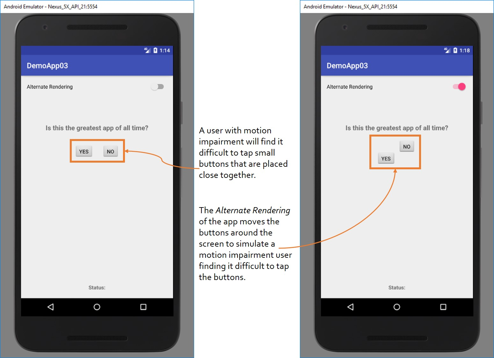

UI Element Sizing & Spacing
Introduction
In this activity, two small buttons are placed close together. A user who is not motion impaired will be able to
easily tap the desired button. However, a user who has a form of motion impairment, for example, hand tremors, will find it
difficult to tap the small button. Further, as the buttons are placed close together, the user might tap the wrong
button. The Alternate Rendering of the app moves the buttons around the screen to simulate a user with hand tremors finding it difficult to tap the buttons.

Activity
Download the activity here.
The non-accessible version of this app is located here.
The accessible version of this app is located here.